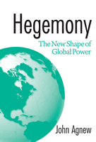

<body bgcolor="#FFFFFF" text="#000000" link="#0000FF" vlink="#CC0000" alink="#CC0000"><center><hr width="350" size="1" align="center" noshade>How American hegemony came about, its effects on the world, and how it now haunts its creators<hr width="350" size="1" align="center" noshade><p><a href="https://cdcshoppingcart.uchicago.edu/Cart/ChicagoBook.aspx?ISBN=9781592131525&&PRESS=temple" target="_top">Buy this book!</a> | <a href="https://cdcshoppingcart.uchicago.edu/Cart/Cart.aspx?PRESS=temple" target="_top">View Cart</a> | <a href="https://cdcshoppingcart.uchicago.edu/Cart/Cart.aspx?PRESS=temple" target="_top">Check Out</a></p><p></p></center><!--none//--><h1>Hegemony</h1>
<H2>The New Shape of Global Power</H2>
<h3>John Agnew</h3>
<P>cloth 1-59213-152-2 $75.50, Apr 05, <FONT COLOR=#990033>Available</FONT>
<br>paper 1-59213-153-0 $38.95, Apr 05, <FONT COLOR=#990033>Available</FONT>
<br>Electronic Book 1-59213-767-9 $38.95 <FONT COLOR=#990033>Available</FONT>
<BR> 296 pp
6x9
10&nbsp;tables 3&nbsp;map(s) 4&nbsp;figures 9&nbsp;halftones
</P><h3 align="center"><P><font color="#996633">Outstanding Academic Title, <i>Choice</i>,
2005</font></P>
</H3>
<BLOCKQUOTE><I>"An excellent book, </i>Hegemony<i> mounts an effective and scholarly challenge to a great deal of rather simplistic recent work on American empire. Agnew's arguments are convincing, and interesting. Perhaps the most compelling is his attempt to show that hegemony is not simply a national project, as most of the empire genre he criticizes argues, but a global project inextricably implicated with the ways in which capitalist globalization works."</i>
<br>&#151<b>Leslie Sklair</b>, Professor of Sociology, London School of Economics and Political Science<i></I></BLOCKQUOTE>
<p><i>Hegemony</i> tells the story of the drive to create consumer capitalism abroad through political pressure and the promise of goods for mass consumption. In contrast to the recent literature on America as empire, it explains that the primary goal of the foreign and economic policies of the United States is a world which increasingly reflects the American way of doing business, not the formation or management of an empire. Contextualizing both the Iraq war and recent plant closings in the U.S., noted author John Agnew shows how American hegemony has created a world in which power is no longer only shaped territorially. He argues in a sobering conclusion that we are consequently entering a new era of global power, one in which the world the US has made no longer works to its singular advantage.
<BR>&nbsp;<h2>Excerpt</h2><P>Excerpt available at <a href="http://www.temple.edu/tempress">www.temple.edu/tempress</a></p>
<BR>&nbsp;<h2>Reviews</h2>
<p><i>"This innovative, lucid study of 'new geographies of power' can and should be read by a wide audience.... Essential."</i>
<br>&#151<b><i>Choice</i></b>
<p><i>"This is an important and challenging book, based on not only wide reading but also deep thinking over several decades. It is a tour de force that should be widely used to stimulate thinking about global futures beyond the simplistic offerings of too many politicians and commentators."</i>
<br>&#151<b><i>Environment and Planning A</i></b>
<p><i>"In </i>Hegemony<i>, which is a contribution to the literatures on both globalization and US foreign policy, John Agnew offers some cogent arguments about the rise of US hegemony and its effects on other countries. He convincingly critiques international relations theorists who characterize the United States as an empire...[and] provides a welcome riposte to international relations theorists who focus solely on territorial power."</i>
<br>&#151<b><i>International Studies Review</i></b>
<p><i>�[An] excellent and noteworthy addition to [the] literature�.the book offer[s] a much-needed bridge between the recent literature on American empire in geography (with its tendencies toward critical geopolitics) and new cultural histories of American neocolonialism�</i>Hegemony<i> deserve(s) to be widely read�and Agnew�applauded for [his] tight, compelling, and pathbreaking work.�
</i><br>&#151<b><i>Historical Geography</i></b>
<BR>&nbsp;<P><p>&nbsp;&nbsp;<font color="#3152A5">Also available in e-book</font></p></P><BR>&nbsp;<br>
<h2>Contents</h2><P>
<p>Preface
<br>Acknowledgments
<br>1. Introduction
<br>2. Hegemony versus Empire
<br>3. American Hegemony and the New Geography of Power
<br>4. Placing American Hegemony
<br>5. U.S. Constitutionalism or Marketplace Society?
<br>6. Globalizing American Hegemony
<br>7. The New Global Economy
<br>8. Globalization Comes Home
<br>9. Conclusion
<br>Notes
<br>Index
</P><BR>&nbsp;<H2>About the Author(s)</H2>
<table><tr><td valign="top"><img src="/tempress/authors/1680_au.gif" height="90" width="75"></td><td width="100%" valign="middle"><p><b>John Agnew</b> is Professor of Geography at the University of California, Los Angeles. He is the author or co-author of <i>Place and Politics</i>, <i>The United States in the World Economy</i>, <i>The Geography of the World Economy</i>, <i>Geopolitics</i>, and <i>Place and Politics in Modern Italy</i>, among other titles, as well as the co-editor of <i>American Space/American Place</i>.</P></td></tr></table>
<BR><H2>Subject Categories</H2>
<p><A HREF="/tempress/political.html" TARGET="_top">Political Science and Public Policy</a>
<BR>
<BR><A HREF="/tempress/sociology.html" TARGET="_top">Sociology</a>
</p>
<p align="center"><a href="https://cdcshoppingcart.uchicago.edu/Cart/ChicagoBook.aspx?ISBN=9781592131525&&PRESS=temple" target="_top">Buy this book!</a> | <a href="https://cdcshoppingcart.uchicago.edu/Cart/Cart.aspx?PRESS=temple" target="_top">View Cart</a> | <a href="https://cdcshoppingcart.uchicago.edu/Cart/Cart.aspx?PRESS=temple" target="_top">Check Out</a></p><p><font face="Arial" size="1"><a href="copyright.html" onMouseOver="window.status='Web Copyright Policy';return true;" onMouseOut="window.status=''" title="Web Copyright Policy">&copy;</a> 2015 <a href="http://www.temple.edu" target="new" onMouseOver="window.status='Link to Temple University home page';return true;" onMouseOut="window.status=''" title="Link to Temple University home page">Temple University</a>. All Rights Reserved. http://www.temple.edu/tempress/titles/1680_reg.html</font></p>